CONTENT
Know more about computing


Data Science vs Machine Learning
At its core, data science is a field of study that aims to use a scientific approach to extract meaning and insights from data. Machine learning, on the other hand, refers to a group of techniques used by data scientists that allow computers to learn from data.
| Data Science | |
|---|---|
| Relationship to Other Field | Approaches |
| Artificial Intelligence | Supervised Learning |
| Data Mining | Unsupervised Learning |
| Optimization | Semi-Supervised Learning |
| Generalization | Reinforcement Learning |
| Statistics | Dimensionality Reduction |
| Machine Learning | |
|---|---|
| Relationship to Other Field | Approaches |
| Data Mining and Statistical Analysis | Descriptive approach |
| Business Intelligence & Strategy-Making | Diagnostic approach |
| Data Engineering and Data Warehousing | Predictive approach |
| Data visualization | Prescriptive approach |



Data Structures & Design Analysis Algorithm
A data structure is a systematic way of organizing and accessing data, and an algorithm is a step-by-step procedure for performing some task in a finite amount of time. To classify some data structures and algorithms as "good", we must have precise ways of analyzing them.
| Design Analysis Algorithm | |
|---|---|
| Techniques | Use of DAA |
| Divide-and-Conquer | Help to design the algorithms for solving different types of problems in Computer Science |
| Dynamic Programming | Helps to design and analyze the logic on how the program will work before developing the actual code for a program |
| Greedy Heuristics | Performing calculation, data processing, and automated reasoning tasks |
| Data Structure | |
|---|---|
| Types | Where it used |
| Linear: arrays, lists | Operating System |
| Tree: binary, heaps, space partitioning etc. | Compiler Design |
| Hash: distributed hash table, hash tree etc. | Artifical intelligence |
| Graphs: decision, directed, acyclic etc. | Graphics |